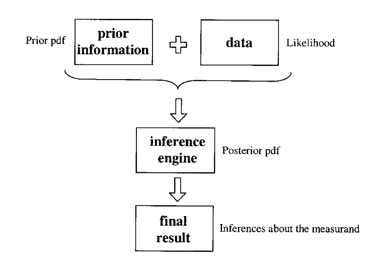

Teaching Measurement in the Introductory Physics Laboratory#
Saalih Allie and Andy Buffler, University of Cape Town, South Africa
Bob Campbell and Fred Lubben, University of York, UK
Dimitris Evangelinos, Dimitris Psillos, Odysseas Valassiades, Univ. of Thessaloniki, Greece
Article in The Physics Teacher · October 2003
DOI: 10.1119/1.1616479
CITATIONS: 86
READS: 4,648
A Probabilistic and Metrological Approach to Measurement#
The recommended approach¹⁰,¹¹ to metrology is based on probability theory for the analysis and interpretation of data. A key element of the ISO Guide is how it views the measurement process. In paragraph 2.1 of TN1297 it is stated that, “In general, the result of a measurement is only an approximation or estimate of the value of the specific quantity subject to measurement, that is, the measurand, and thus the result is complete only when accompanied by a quantitative statement of its uncertainty.”¹³ Uncertainty itself is defined as “a parameter associated with a measurement result, that characterizes the dispersion of the values that could reasonably be attributed to the measurand.”¹¹,¹²

Fig. 1. A model for determining the result of a measurement.
The measurement process involves combining new data with all previous information about the measurand to form an updated state of knowledge (see Fig. 1). The formal mathematics used are probability density functions (pdfs) with the (true) value of the measurand as the independent variable. (We note that there is no difference between the terms “the value of the measurand” and “the true value of the measurand.”)¹¹,¹² Thus, the measurement process produces a pdf that best represents all available knowledge about the measurand. The last step in the measurement process involves making inferences about the measurand based on the final pdf. We emphasize that both the case of the single reading and the case of a set of repeated observations with dispersion involve seeking the final pdf for the measurand.
Although the ISO recommendations¹¹,¹² do not refer explicitly to the underlying philosophy, the formalism relies on the Bayesian approach to data analysis (see for example Ref. 14 and its references). Readers familiar with Bayesian terminology will see in Fig. 1 that the process can be described as the prior pdf convoluted with the likelihood (or sample function) to form the posterior pdf, which contains all the information about the measurand. The final pdf is usually characterized in terms of its location, an interval along which the (true) value of the measurand may lie, and the probability that the value of the measurand lies on that interval. In metrological terms these are, respectively, the best estimate of the measurand and its uncertainty, and the coverage probability, or level of confidence (the percentage area under the pdf defined by the uncertainty interval). A measurement result includes these three quantities and ideally should include an explicit statement about the pdf used.
The ISO Guide¹¹,¹² suggests the use of three pdfs for most situations (a uniform or rectangular pdf, a triangular pdf, and a Gaussian pdf). If the pdf is symmetrical (as is the case with these three), then the best estimate (the expectation or mean value) will coincide with the center of the distribution, while the standard uncertainty is given by the square root of the variance (the second moment of the distribution). Typical statements describing a measurement result are of the form “the best estimate of the value of the physical quantity is X with a standard uncertainty \(U\) and the probability that the measurand lies on the interval \(X \pm U\) is \(Z\%\).” (The coverage probability associated with a standard uncertainty for the Gaussian pdf is about 68% while those for the triangular and rectangular pdfs are about 65% and 58%, respectively.) In this approach, instrument readings are considered as constants, while the concept of probability is applied to any claims made about the value of the measurand, which is considered a random variable. Neither the measurand itself nor the data “possess” either uncertainty or probability, but these concepts are applicable to the inferences that are made. This contrasts with the traditional approach, where expressions are used such as “the error of the measurement” or “the uncertainty of the instrument scale.”
The ISO Guide¹¹,¹² classifies uncertainty into two types based on the method of evaluation. A Type A evaluation of uncertainty is based on the dispersion of a set of data using statistical methods, while a Type B evaluation is estimated using all available nonstatistical information such as instrument specifications, previous measurements, the observer’s personal judgment, etc. It should be stressed that uncertainties resulting from Type A and B evaluations do not correspond to “random” and “systematic” errors. For instance, the ISO Guide states that “Type B standard uncertainty is obtained from an assumed probability density function based on the degree of belief that an event will occur,”¹¹,¹² implying that systematic errors should acquire a probabilistic description, since they are never precisely and accurately known. This is not the case in the traditional scheme. Type A evaluations are applicable to situations involving repeated observations with dispersion, while Type B evaluations are applicable in all measurements.¹¹,¹² The general procedure for evaluating the overall uncertainty associated with a measurand is to list all the possible sources of uncertainty and evaluate each individual contribution (using an appropriate pdf). This is referred to as an uncertainty budget. The overall or combined uncertainty u_c is then calculated using the usual uncertainty propagation formula.¹¹,¹² A key point is that any number of uncertainty components can be combined in this way, whether they result from a Type A or a Type B evaluation.
Examples#
We present two examples below in which the quantity of interest is directly determined from the measurement.
(a) A single digital reading#
Fig. 2. (a) A single digital reading. (b) The uniform pdf used to model the uncertainty due to reading the scale of the instrument, expressing that the measurand could lie with equal probability at any position within the interval. The value of 0.0029 V is the standard uncertainty u_s associated with the scale reading only. A similar uniform pdf models the uncertainty due to rated accuracy u_r = 0.0143 V, as well as the combined uncertainty u_c = 0.0146 V. The measurement result is expressed as V_result = 2.470 ± 0.015 V (see text).
The case of having only a single reading often occurs in introductory laboratory courses. The traditional approach offers no coherent framework and various ad hoc prescriptions are usually presented. However, it is easily dealt with in a logically consistent way in the probabilistic approach using the Type B evaluation based on assigning rectangular, triangular, or Gaussian probability density functions. Thus, the dichotomy between the so-called “classical” estimation of uncertainty (1/2 least-scale division) for single measurements and the formal “statistical” estimation (standard deviation) for dispersed measurements does not surface.
Suppose a digital voltmeter with a rated accuracy of ±1% is used to measure the voltage across the terminals of a battery [see Fig. 2(a)]. The best estimate of the voltage is clearly 2.47 V. In order to calculate the overall uncertainty, we need to identify all the possible sources of uncertainty, for example, the resolution of the scale of the instrument, the rated accuracy, contact resistance, environmental factors such as the temperature, etc. For illustrative purposes we will assume that the uncertainties due to the scale resolution u_s and the rated accuracy u_r are the dominant contributors to the combined uncertainty u_c and proceed to evaluate each of them.
In the traditional teaching practice, it is often wrongly assumed that the rated accuracy is small enough to be ignored. Therefore, usually only a so-called “least-count error” is attached to the reading, so that the experimental result becomes “2.470 ± 0.005 V.” However, this expression does not have a probabilistic meaning within the frequentist approach because there is only a single recorded value. In order to describe the same experimental datum within the probabilistic approach, use a suitable distribution, such as a rectangular (uniform) pdf [see Fig. 2(b)], with the best estimate at the center of the distribution and the limits defined by the range of the last digit of the digital scale. Note that the area under the pdf is always normalized to unity. The standard uncertainty u_s is then given by the square root of the variance (the second moment of the distribution)¹¹,¹² or
u_s = half of the width of the rectangle / √3 = 0.005 / √3 = 0.0029 V.
We now have to convert the rated accuracy of the voltmeter, given as ± 1%, to a standard uncertainty u_r. This can be achieved by assuming a uniform pdf (as suggested in the GUM¹¹,¹²), in which case the half-width of the distribution will be
(0.01) (2.47) = 0.0247 V.
The standard uncertainty u_r is then given by
u_r = 0.0247 / √3 = 0.0143 V.
The combined uncertainty u_c is therefore
u_c = √(u_s² + u_r²) = √((0.0029)² + (0.0143)²) = 0.0146 V.
In practice this uncertainty estimate would be larger if some of the other sources of uncertainty, neglected here, are included in the uncertainty budget. We also note here the practice used in the GUM of quoting two significant figures for all final uncertainty estimates. Therefore, the measurement result is expressed as V_result = 2.470 ± 0.015 V.
Should one wish to emphasize the aspect of prior information during teaching, one can proceed as follows. Students are presented with a 3-V battery and a voltmeter, and asked to describe (model) the information available about the measurand (V) before measuring it. Reasoning about the measurand before obtaining data is an essential feature of the Bayesian approach. This stage aims at demonstrating that any conclusion about the measurand has the form of an interval, in this case from 0 V (depleted battery) to nominal 3 V (full battery). Students are then asked to draw a graph of the probability of the statement “the value of the voltage is x,” where x is in the interval. We have found that most students have little difficulty in drawing a rectangular probability distribution (similar to Fig. 2), an intuitive conclusion compatible with the Bayesian principle of insufficient reason. A subsequent single measurement, as illustrated above, serves to demonstrate how new information modifies the existing knowledge of the measurand, reduces uncertainty, and narrows the probability of the posterior distribution. Finally, successive measurements with analogue or digital meters demonstrate that despite the gradual reduction of uncertainty, absolute knowledge of the measurand is not possible. There are some indications that such a teaching approach may be fruitful when dealing with students’ initial tendency to view single measurement results as “exact” or “point-like.”⁴,⁷
The treatment outlined for dealing with direct single measurements is of course applicable irrespective of the type of instrument used. As an extension to the previous example, we can consider the case if the same voltage were measured by an analog voltmeter. Then the scale uncertainty would again be modeled by a pdf (e.g., uniform or triangular). In this case, the limits of the pdf depend on both the least-count division of the instrument being used and the judgment of the experimenter in reading the scale. As before, this scale uncertainty would be combined with the uncertainty arising from the accuracy rating of the instrument.
(b) An ensemble of repeated readings which are dispersed#
Fig. 3. (a) Distribution of relative frequencies for the time readings t_measured. The dotted line represents the predicted Gaussian distribution of the population from which the 20 readings were sampled. (b) A Gaussian pdf used to model the measurement result. The final result t_result indicated assumes that all other sources of uncertainty are negligible (see text).
Consider an experiment where we make 20 repeated observations of a time t under the same conditions, for example, in measuring the period of a pendulum with a stopwatch having a resolution of 1 ms and rated accuracy of 0.1 ms. The 20 readings are summarized and represented as a histogram of relative frequencies [Fig. 3(a)]. According to the traditional approach, the measured values t_i are modeled as values of a random variable t_measured. The 20 values are considered to be sampled from an idealized Gaussian distribution, which would occur if the data were infinite and the histogram bins were reduced to zero width. From our sample we can estimate the parameters of this idealized Gaussian through the familiar quantities of the arithmetic mean t̄ of the N = 20 observations as
t̄ = (1/N) * Σ(t_i) for i=1 to N
and the experimental standard deviation s(t) of the observations,
s(t) = √[ (1/(N-1)) * Σ(t_i - t̄)² ] for i=1 to N
The calculations for the data in question yield that t̄ = 1.015 s and s(t) = 0.146 s.
Based on the result from the central limit theorem that the sample means are distributed normally, the experimental standard deviation of the mean s(t̄)¹¹,¹² is given by
s(t̄) = s(t) / √N
which yields s(t̄) = 0.033 s in the present example. In the traditional approach s(t̄) is often termed the “standard error of the mean” and is denoted by σ_m.
The interpretation of this result according to mathematical statistics is that “we are 68% confident that the mean (of any future sample taken) will lie within ± 0.033 s of the measured mean of 1.015 s” (Conclusion I).
Physicists tend to interpret Conclusion I in accordance with their needs for making an inference about the true value as follows: “we are 68% confident that the ‘true value’ (of the measurand) lies in the interval 1.015 ± 0.033 s” (Conclusion II).
However, Conclusion II cannot easily be justified in the traditional approach since t̄ and s(t̄) are calculated from observed values, and can only summarize what we know about the data since there is no formal link between knowledge of the measurand (Conclusion II) and knowledge of the data (Conclusion I). Thus, the measurement result cannot be represented directly on Fig. 3(a) because the relative frequency histogram and the predicted Gaussian of infinite measurements [Fig. 3(a)] are plotted against t_measured.
In the probabilistic approach, however, all inferences about the measurand are expressed via the pdf of Fig. 3(b), which is plotted against t_true. Using the concepts of prior information and data at hand, we are able to conclude in a straightforward and logically consistent way the final result as follows: “The best estimate of the value of the time is 1.015 s with a standard uncertainty of 0.033 s, and there is a 68% probability that the best estimate of the time lies within the interval 1.015 ± 0.033 s, assuming that the distribution of measured times is Gaussian.” In practice, of course, the uncertainty budget for this measurement of t would include a number of additional sources of uncertainty, each of which would be estimated using a Type B evaluation, so that the combined uncertainty would be larger than 0.033 s.
When teaching the case of repeated measurements, the most important objective is to bring students around to the notion that an ensemble of dispersed values obtained by repeated observations must be modeled by theoretical constructs that represent the ensemble as a whole.²,⁷ Regarding the shape of the Gaussian, this can be made plausible by constructing histograms of relative frequencies of simulated or actual data and showing how the distribution tends toward a bell-like shape as the number of readings increases and the bin width decreases. Making the conceptually correct link between relative frequencies, based on past experience, and probabilities, for inference, is an important step at this stage.¹⁵
Conclusion#
The ISO approach solves one of the key problems associated with the traditional frequentist approach to measurement, namely that the statistical formulae lead logically only to statements about the data themselves. Therefore, it is not valid to make the logical jump that is usually made in laboratory manuals to interpret a standard error as a standard uncertainty. Students (and others) have difficulties understanding this discontinuity in logic. The probabilistic approach, as outlined, leads directly to inferences about the measurand in a natural way, in both cases of single and repeated measurements. In addition, representing the states of knowledge graphically as pdfs, and not as numbers or intervals, provides a persuasive and consistent explanatory framework for all cases of measurement.
Experimentation and measurement lie at the heart of physics, and it is important that students develop an understanding of these concepts. However, the way in which these have been dealt with does not appear to have been effective. Two possible reasons are, first, that students’ prior knowledge about the nature of measurement has not been taken into account and, second, that there has been no logically consistent framework that could be used to teach the basic concepts. By adopting the probabilistic approach, the latter can be effectively addressed (apart from the fact that this is what research scientists have to adhere to!). In addition, the guidelines suggested by the ISO, such as the concept of an uncertainty budget and the level of calculational detail to be reported, should also assist pedagogy. It should be noted that there now exist software packages¹⁶ that can be used to perform the sometimes tedious calculations required for a given uncertainty budget.
We argue that by adopting the view that the introductory laboratory course should be focused on experimentation and intelligent data analysis based on probability theory, the experimental aspects of physics can be placed at the center of the course rather than relegated to an “add on” to the theoretical aspects. The concepts of probability and uncertainty should be addressed as early as possible in the teaching as fundamental to physics, highlighting the uncertain and tentative, yet quantifiable, nature of scientific knowledge. The groups involved in the present paper are developing and refining various laboratory teaching materials based on this approach.
Finally, the language of probabilistic metrology offers access to other areas of physics such as quantum mechanics and statistical mechanics, as well as to current technologies such as image processing. From a broader perspective, an understanding of the interpretation of data, and hence of evaluating “scientific evidence” is an essential life skill in the present information age.
Acknowledgments#
Our work has been partially funded by the Universities of Cape Town, Thessaloniki, and York, and by the National Research Foundation (South Africa), the British Council, and the European Union (LSE project PL 95-2005). We wish to thank professors Joe Redish, Craig Comrie, Roger Fearick, and Sandy Perez for useful discussions.
References#
F. Tyler, A Laboratory Manual of Physics, 6th ed. (Edward Arnold, London, 1988).
M-G. Séré, R. Journeaux, and C. Larcher, “Learning the statistical analysis of measurement error,” Int. J. Sci. Educ. 15 (4), 427–438 (1993).
J.G. Giordano, “On reporting uncertainties of the straight line regression parameters” Eur. J. Phys. 20 (5), 343–349 (1999).
D. Evangelinos, O. Valassiades, and D. Psillos, “Undergraduate students’ views about the approximate nature of measurement results,” in Research in Science Education: Past, Present and Future, edited by M. Komorek, H. Behrendt, H. Dahncke, R. Duit, W. Gräber, and A. Cross (IPN Press, Kiel, 1999), pp. 208–210.
D. Evangelinos, D. Psillos, and O. Valassiades, “An investigation of teaching and learning about measurement data and their treatment in the introductory physics laboratory,” in Teaching and Learning in the Science Laboratory, edited by D. Psillos and H. Niederrer (Kluwer Academics, Dordrecht, 2002).
F. Lubben, B. Campbell, A. Buffler, and S. Allie, “Point and set reasoning in practical science measurement by entering university freshmen,” Sci. Educ. 85 (4), 311–327 (2001).
A. Buffler, S. Allie, F. Lubben, and B. Campbell, “The development of first year physics students’ ideas about measurement in terms of point and set paradigms,” Int. J. Sci. Educ. 23 (11), 1137–1156 (2001).
S. Allie and A. Buffler, “A course in tools and procedures for Physics I,” Am. J. Phys. 66 (7), 613–624 (1998).
S. Allie, A. Buffler, L. Kaunda, and M. Inglis, “Writing-intensive physics laboratory reports: Tasks and assessment,” Phys. Teach. 35, 399–405 (Oct. 1997).
International Organization for Standardization, International Vocabulary of Basic and General Terms in Metrology (VIM) (ISO, Geneva, 1993).
International Organization for Standardization, Guide to the expression of uncertainty in measurement (GUM) (ISO, Geneva, 1995).
American National Standards Institute, U.S. Guide to the Expression of Uncertainty in Measurement (1997), ANSI/ NCSL Z540-2-1997.
B.N. Taylor and C.E. Kuyatt, Guidelines for Evaluating and Expressing the Uncertainty of NIST Measurement Results (NIST Technical Note 1297, 1994). Available in electronic form at http://physics.nist.gov/Pubs/guidelines/contents.html .
G. d’Agostini, Bayesian Reasoning in High Energy Physics - Principles and Applications (CERN Yellow Report 99-3, 1999).
G. Shafer, “What is probability?” in Perspectives in Contemporary Statistics, edited by D.C. Hoaglin and D.S. Moore (Mathematical Association of America, 1992), pp. 19–39.
The best we know of is the GUM Workbench at http://www.metrodata.de.
PACS codes: 01.40Gm, 01.50Qb, 06.20
Saalih Allie, Academic Development Programme in Science coordinator, University of Cape Town, South Africa; saalih@science.uct.ac.za
Andy Buffler, Physics Department professor, University of Cape Town, South Africa; abuffler@science.uct.ac.za
Bob Campbell, Department of Educational Studies head, University of York, UK; rmc1@york.ac.uk
Dimitris Evangelinos, Physics Department Ph.D. candidate, University of Thessaloniki, Greece; evangelinos@physics.auth.gr
Fred Lubben, Department of Educational Studies senior research fellow, University of York, UK; fel1@york.ac.uk
Dimitris Psillos, School of Education professor of science education, University of Thessaloniki, Greece; psillos@skiathos.physics.auth.gr
Odysseas Valassiades, Physics Department associate professor, University of Thessaloniki, Greece; valassiades@physics.auth.gr